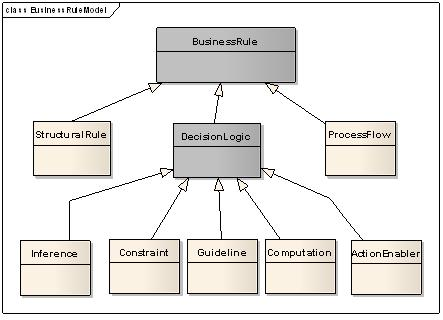

| Guideline: Business Rule Classification |
 |
|
The following diagram illustrates a conceptual breakdown of the different types of rules that are of interest to the business.  Structural rules define the terms used by the business in expressing their business rules and the relationships (facts) among those terms. These comprise the vocabulary used in rule authoring. As an example a statement like: A Insurance Policy includes a set of coverage, is effective at a given date and new to be renewed every six months, structures the domain knowledge so that a InsurancePolicy entity will have a effectiveDate, expirationDate and a list of Coverage. Decision logic is the core of what is typically referred to as 'business rules.' When a business decision needs to be made (e.g. whether to sell a given insurance policy, whether to accept or reject a claim), the business rules are the individual statements of business logic that determine the result of the decision. Process flow rules are rules that purely direct the movement through a process flow (or workflow, etc.). It may be helpful to distinguish process flow rules from the business logic rules that determine the values of the parameters on which the process flow is directed.
Barbara Von Halle in her book "Business Rules Applied" is proposing the following description for each sub class of the
decision logic:
Classifying the rules will help to decide for the best implementation. Inference and action enabler type of rules are good candidates for a rule engine. Pure computation will most likely been done in code unless computation rules are subject to frequent changes. It is also helping to evaluate the complexity of the rule and so to evaluate the workload to implement it. |
This program and the accompanying materials are made available under the |